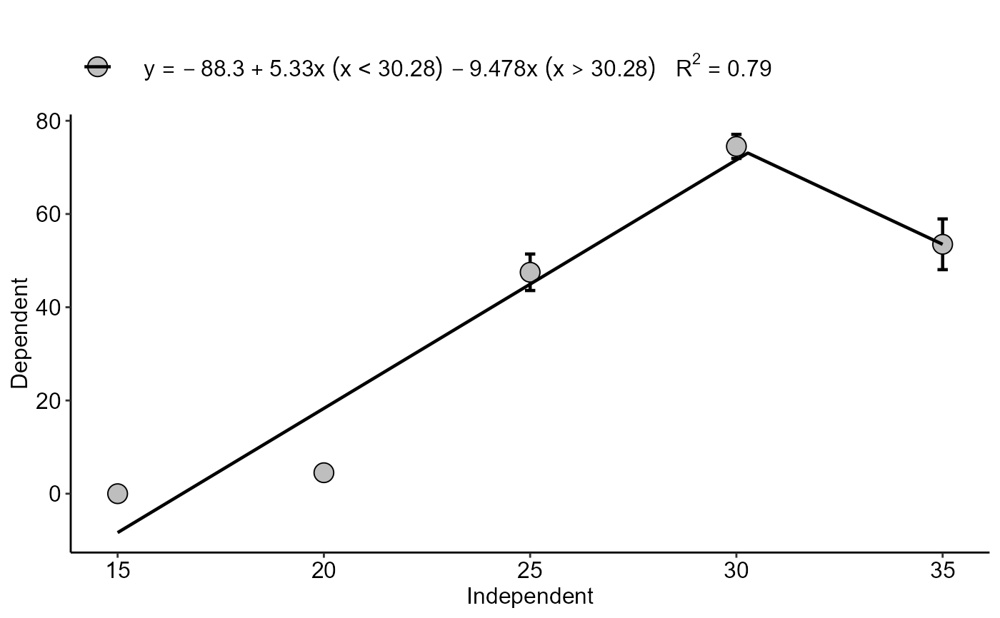
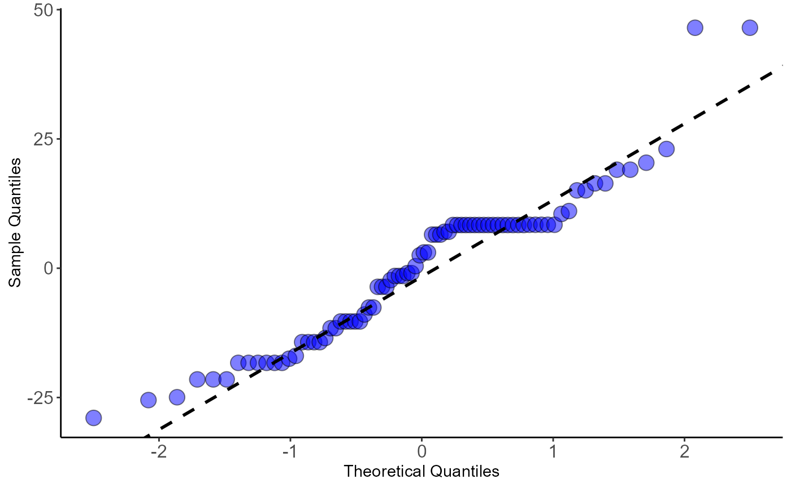

extract.model.RdThis function allows extracting the model (type="model") or residuals (type="resids"). The model class depends on the function and can be (lm, drm or nls). This function also allows you to perform graphical analysis of residuals (type="residplot"), graphical analysis of standardized residuals (type="stdresidplot"), graph of theoretical quantiles (type="qqplot").
extract.model(model, type = "model")Object returned from an analysis function
output type
Returns an object of class drm, lm or nls (type="model"), or vector of residuals (type="resids"), or graph of the residuals (type="residplot", type="stdresidplot", type=" qqplot").
data("aristolochia")
attach(aristolochia)
#> The following objects are masked from aristolochia (pos = 4):
#>
#> resp, trat
#> The following objects are masked from aristolochia (pos = 5):
#>
#> resp, trat
#> The following objects are masked from aristolochia (pos = 7):
#>
#> resp, trat
a=linear.linear(trat,resp,point = "mean")
#> $Coefficients
#>
#> Call:
#> stats::lm(formula = y ~ x + w)
#>
#> Residuals:
#> Min 1Q Median 3Q Max
#> -28.950 -11.600 2.775 8.350 46.500
#>
#> Coefficients:
#> Estimate Std. Error t value Pr(>|t|)
#> (Intercept) -88.3000 7.7231 -11.433 < 2e-16 ***
#> x 5.3300 0.3331 16.000 < 2e-16 ***
#> w -9.4783 1.2473 -7.599 5.99e-11 ***
#> ---
#> Signif. codes: 0 '***' 0.001 '**' 0.01 '*' 0.05 '.' 0.1 ' ' 1
#>
#> Residual standard error: 14.9 on 77 degrees of freedom
#> Multiple R-squared: 0.7865, Adjusted R-squared: 0.7809
#> F-statistic: 141.8 on 2 and 77 DF, p-value: < 2.2e-16
#>
#>
#> $values
#> Parameter values
#> 1 Breakpoint 30.27870
#> 2 Breakpoint Response 73.08545
#> 3 X Minimum NA
#> 4 Y Minimum NA
#> 5 AIC 664.16419
#> 6 BIC 673.69230
#> 7 r-squared 0.79000
#> 8 RMSE 14.61557
#>
#> [[3]]

#>
extract.model(a,type = "qqplot")
